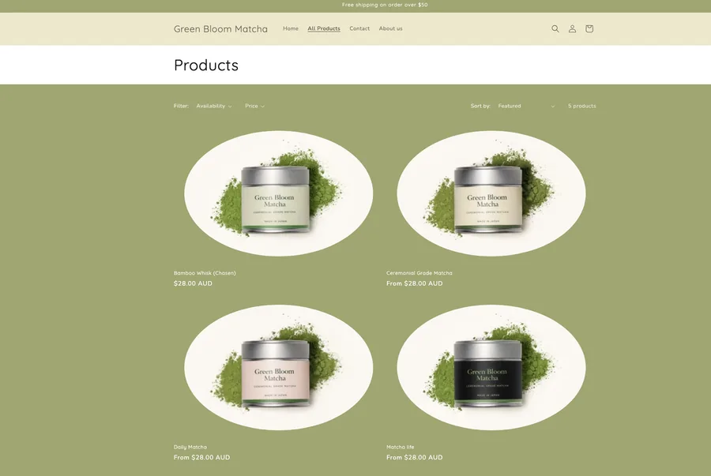
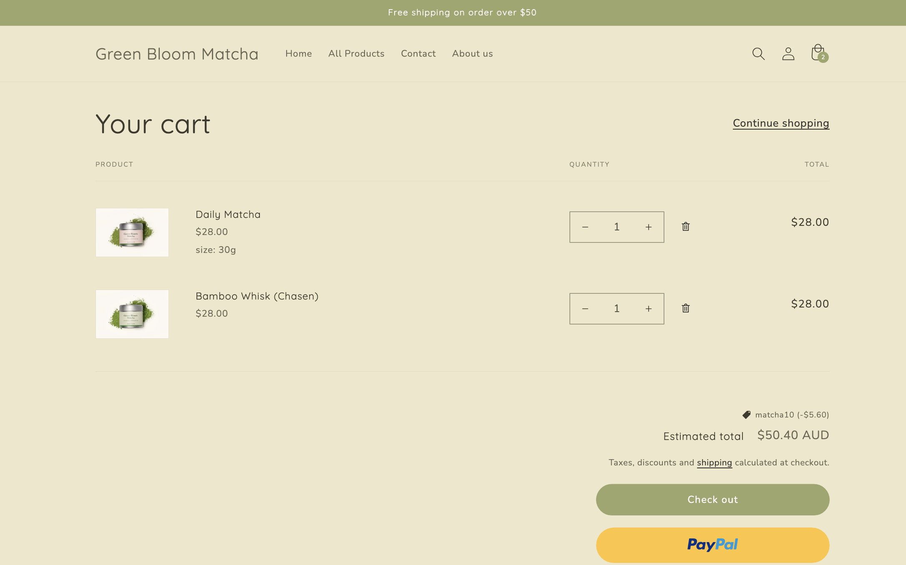

Case Study · Shopify
Green Bloom Matcha
A Shopify ecommerce concept created to show softer visual merchandising, mobile-first browsing, and a more premium brand-led storefront direction.

Overview
Project Goal
Green Bloom Matcha was developed as a Shopify ecommerce concept for a brand that needed more than a default storefront. The goal was to create a store that felt polished, brand-aware, and calm to browse while still supporting hierarchy, trust, and product discovery.
My Role
What I Designed
- Defined the homepage layout and overall visual storytelling direction.
- Designed the collection and product presentation structure.
- Planned a mobile-first shopping flow with clearer section hierarchy.
- Applied a softer colour palette, spacing system, and content rhythm to support the brand feel.
Tools
Outcome
Result
The concept demonstrates how I approach Shopify projects with both visual restraint and commercial intent. It presents products more clearly, supports a calmer mobile browsing experience, and shows that I can design for ecommerce in a way that feels more considered than a standard template-based storefront.
Selected Screens


